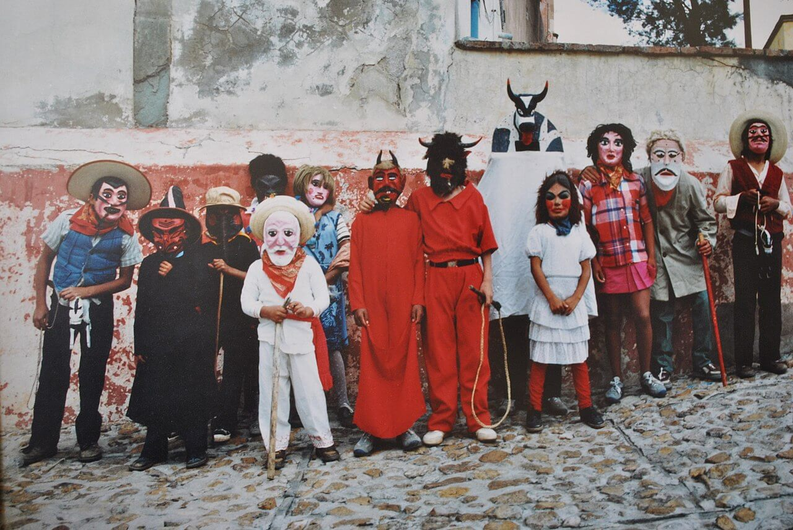

Las costumbres de Guanajuato

🙏 1. La Alborada
Una tradición que consiste en tocar música de mariachi o banda muy temprano en la mañana para despertar a la gente durante las festividades importantes, especialmente en fiestas patronales.
💃 2. La Calenda
Procesión tradicional que se realiza en fiestas patronales y eventos importantes, donde la gente camina por las calles acompañada de música, luces, y bailes, celebrando con alegría.
🙏 3. La Procesión del Silencio
Evento solemne que ocurre durante la Semana Santa, especialmente en la ciudad de Guanajuato, donde se hace un recorrido nocturno en silencio para conmemorar la pasión de Cristo.
🙏 4.Día de Muertos
Preparar barbacoa es casi una ceremonia en sí misma.
Se hace en fiestas importantes (bodas, bautizos, aniversarios).
Cocinarla bajo tierra, envuelta en pencas de maguey, es una tradición comunitaria y familiar.
💃 5. Las Posadas
Durante la temporada navideña, se realizan posadas que representan la búsqueda de refugio de María y José. Se cantan villancicos y se rompen piñatas en comunidad.
🧺 6. La Feria de León
Aunque es más reciente, la Feria se ha convertido en una tradición importante con exposiciones ganaderas, música, comida típica y juegos mecánicos, reuniendo a familias y visitantes.
🧵 7. Carnaval de San Miguel de Allende
Celebración con desfiles, disfraces, música y bailes tradicionales que mezclan influencias indígenas y españolas, muy esperada cada año.
🗣️ 8. Uso del sarape y rebozo
Prendas tradicionales que aún se usan en celebraciones y eventos culturales, representando la identidad y herencia artesanal de la región.